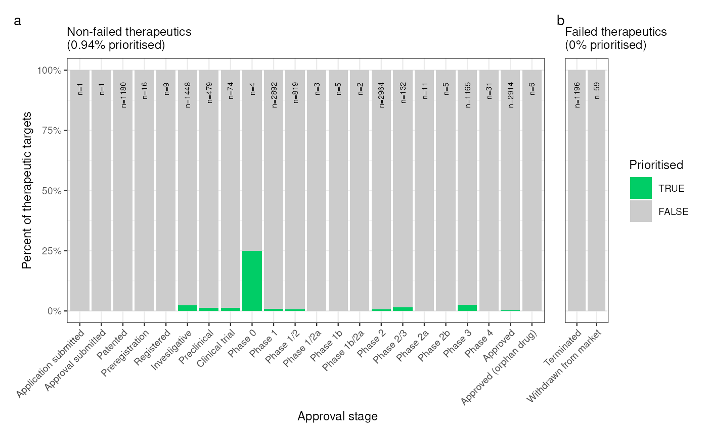

Identify the overlap between your prioritised list of gene therapy targets and currently existing gene therapy targets that are currently on the market or are in clinical trials. Uses data from the Therapuetic Target Database.
ttd_check(
top_targets,
drug_types = NULL,
failed_status = c("Terminated", "Withdrawn from market", "Discontinued*", NA),
keep_status = NULL,
remove_status = c(NA),
allow.cartesian = FALSE,
run_map_genes = TRUE,
force_new = FALSE,
show_plot = TRUE,
save_path = NULL,
height = NULL,
width = NULL,
phenotype_to_genes = HPOExplorer::load_phenotype_to_genes()
)Top targets generated by prioritise_targets.
Filter results by drug type.
Drug approval status categories that indicate the drug failed.
Filter results by drug approval status.
Remove results by drug approval status.
See allow.cartesian in [.data.table.
Map genes to standardised HGNC symbols using map_genes.
If TRUE, force a new download.
Print the plot to the console.
Save the plot to a file.
Set to NULL to not save the plot.
Height of the saved plot.
Width of the saved plot.
Phenotype to gene mapping from load_phenotype_to_genes.
top_targets <- MSTExplorer::example_targets$top_targets
res <- ttd_check(top_targets=top_targets)
#> Loading required namespace: readxl
#> Retrieving all organisms available in gprofiler.
#> Using stored `gprofiler_orgs`.
#> Mapping species name: hsapiens
#> 1 organism identified from search: hsapiens
#> 13,815 / 27,118 (50.94%) genes mapped.
#> Reading cached RDS file: phenotype_to_genes.txt
#> + Version: v2024-12-12
#> Non-failed gene targets enrichment p-value: 8.49288852005138e-18
#> Failed gene targets depletion p-value: 0.0359663542091514
